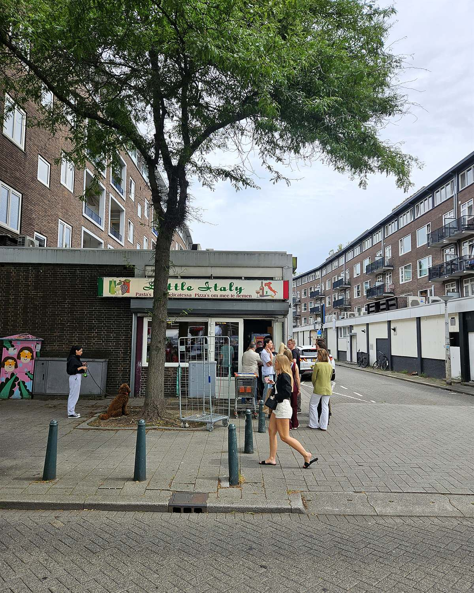

Little Italy — puur Italië tussen de parkeergarage en de Meent

Vandaag behandelen we een iconische plek in Rotterdam: Little Italy. Wat is het eigenlijk? Is het een Italiaanse supermarkt, een verswinkel, een broodjeszaak, een Italiaanse delicatessenzaak? Het is het eigenlijk allemaal een beetje.
Als je vooraf zou bedenken dat een zaak in een stukje niemandsland tussen de parkeergarage en de drukte van de Meent en de zaterdagmarkt succesvol zou zijn, zouden ze je voor gek verklaren. Het is een winkel waar je zo voorbij zou lopen als je niet weet wat er zich binnen allemaal afspeelt. Maar Rotterdammers weten het wel, en daarom is het altijd druk in dit stukje klein Italië midden in het centrum van Rotterdam.
Tijdens werkdagen begint de rij zich rond 11.45 uur te vormen. Iedereen schuift rustig aan om zo’n twintig minuten te wachten voor ze aan de beurt zijn. De keuze wordt gemaakt tussen een halve pizza of een van de verse broodjes die dagelijks worden gemaakt en op het krijtbord staan.
De broodjes wisselen per dag, maar er zijn er twee waar ik zelf steeds op uitkom. Het broodje parmaham: kraakvers knapperig brood, een gulle laag flinterdun gesneden parmaham, buffelmozzarella, verse pesto en wat rucola. Geen ingewikkelde sausjes, gewoon Italië op een broodje — zo eentje die smaakt zoals op vakantie op een zonnig pleintje. En het broodje tonno, volgens de vaste klanten stiekem de beste keuze: romige tonijnsalade met frisse Italiaanse kruiden op zo’n knapperig boerenbroodje. Dikke aanrader.
Ga je voor de pizza, dan krijg je hier geen hippe dunne zuurdesembodem maar een eerlijke Italiaanse plaatpizza: knapperige korst, luchtig van binnen, verse tomatensaus met een lichtzoete smaak en een royale laag gesmolten kaas. Heerlijk als snelle lunch of als puntje tussendoor.
Naast de heerlijke broodjes is het gewoon een supermarkt, een Italiaanse supermarkt, die als je terugkomt uit Italië — of er juist naartoe gaat — zorgt dat je het ultieme vakantiegevoel gewoon kunt doortrekken in je eigen stad. Als je binnenstapt weet ik zeker dat je mandje snel gevuld zal zijn. De bekende Italiaanse biertjes zijn er natuurlijk, en de fles limoncello moet je zeker meenemen.
Maar pak in het weekend vooral ook wat bij de traiteurbalie — daar lopen veel mensen op zaterdag speciaal voor binnen. Laat een paar ons mortadella met pistache afsnijden, wat 18 maanden gerijpte parmaham of een stukje pittige gorgonzola voor bij de zaterdagborrel. Er liggen ook verse pasta’s en huisgemaakte sauzen voor ’s avonds, en reken vooral niet af zonder een paar cannoli mee te grissen bij de kassa: knapperig, gevuld met ricottacrème, heerlijk bij de koffie.
Kortom: je loopt vanaf nu nooit meer zomaar vanaf de garage richting de Meent zonder hier even te stoppen.
Praktisch
Italiaanse Delicatessen Little Italy, Lombardkade (centrum, op loopafstand van de Meent). Doordeweeks rond lunchtijd het drukst — de rij begint om 11.45 uur, dus kom iets eerder of juist later.
Iemand die dit moet weten?